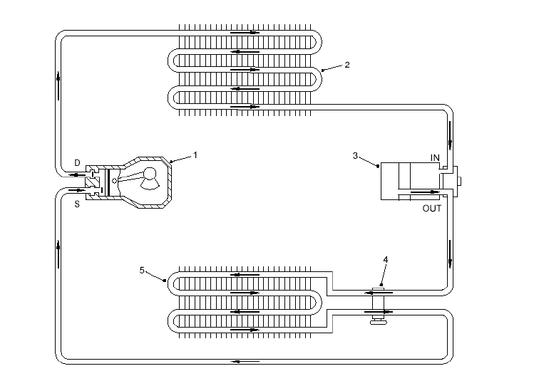
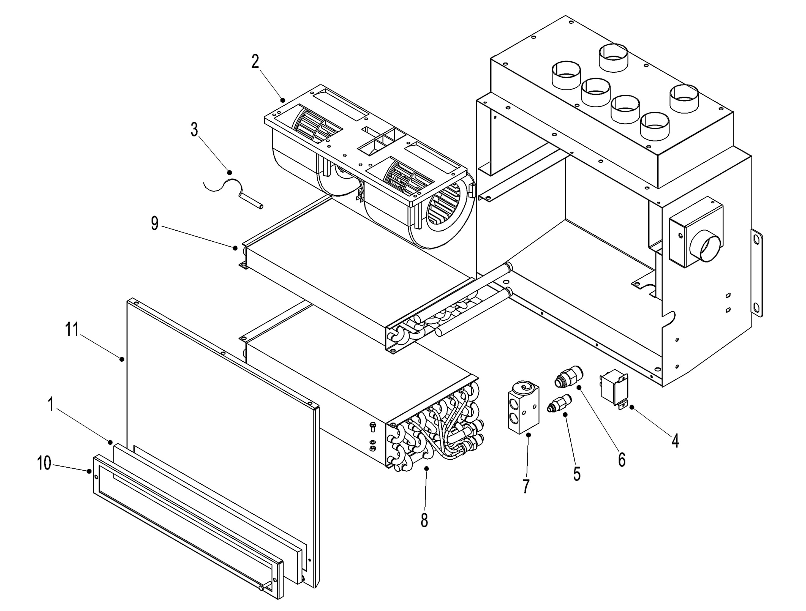
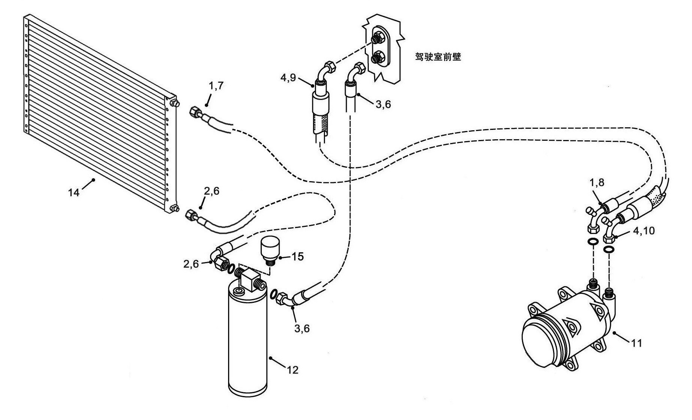
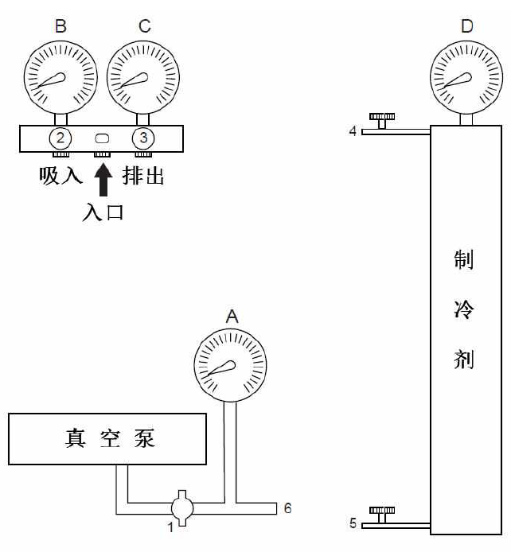

空调管路 · AIR CONDITIONER LINES
Спецификация
1
Компрессор
4
Расширительный клапан
2
Конденсатор
5
Испаритель
3
Осушитель
Рис. 1– Типичная принципиальная схема регулировки
Описание
Компрессор
Компрессор может сжимать воздух, но пыль, влага, жидкий хладагент (R134a) и другие несжатые вещества могут повредить компрессор. Компрессор поглощает пар R134a из испарителя и сжимает его под высоким давлением. Пар под высоким давлением поступает в конденсатор, выделяет тепло, и R134a переходит в жидкую форму.
Муфта
Электронная муфта служит для управления срабатыванием или отключением компрессора. Когда питание муфты отключено, шкив проворачивается вхолостую, компрессор не работает. Когда питание муфты включено, она срабатывает и приводит компрессор в действие
Конденсатор
Конденсатор играет роль в достаточной передаче тепла от пара R134a под высоким давлением, превращении R134a в жидкий, при нормальных условиях работы все части под высоким давлением в системе нагреваются и нагреваются, конденсатор отводит большое количество тепла. На внешнем конце конденсационной трубки устанавливаются охлаждающие пластины, вентилятор обеспечивает циркуляцию воздуха вокруг конденсационной трубки. Следует избежать попадания листьев, бумажных стружек, загрязняющих веществ и других посторонних предметов на конденсатор, охлаждающие пластины должны быть настильными и аккуратными, чтобы обеспечить надлежащий обмен воздуха. Как правило, конденсатор расположен в передней части радиатора двигателя, если возникает сопротивление прохождения воздуха, то это может негативно влиять на работоспособность конденсатора. Изгиб лопасти вентилятора, пробуксовка при вращении вентилятора или любая другая неисправность могут вызвать уменьшение объем воздуха, проходящего через конденсатор, необходимо своевременно отремонтировать. Кроме того, смазка, грязь или антифриз и другие посторонние предметы, попадающие на конденсатор, могут производить действие теплоизоляции и негативно влиять на отдачу тепла.
Поскольку конденсатор играет роль в рассеивании тепла, в связи с этим, любые факторы препятствия и прекращения данного действия могут негативно влиять на эффект охлаждения, кроме того давление и температура R-134a повышаются или снижаются одновременно, ненадлежащая тепловыделение может вызвать чрезмерное повышение давления, в результате чего происходит чрезмерное повышение давления в системе, это может стать причиной возникновения повреждений конденсатора, шлангов, штуцеров и уплотнительных элементов, в то же время тепло не будет рассеиваться достаточно конденсатором, это может вызвать значительное повышение давления и срабатывание переключателя давления.
Осушитель
Жидкость R-134a под высоким давлением от конденсатора подается в осушитель, она скапливается после фильтрации. Влажный воздух может нанести самый большой вред системе кондиционирования воздуха, но влага в осушителе только может воспринимать небольшое количество влаги. Осушение сушильного агента или превышение допустимое поглощающей способности сушильного агента вследствие чрезмерного накопления влаги в системе может привести к разрыву резервуара для сушильного агента в осушителе и загрязнению всей системы.
Постарайтесь удалить влагу из системы и своевременно замените вышедший из строя осушитель. При каждой замене рекомендованного осушителя определенная часть системы R134a может сообщаться с воздухом, в стеклянном окошке в верхней части осушителя устанавливается индикатор влажности. Желтый индикатор свидетельствует о попадании влаги в систему, зеленый индикатор свидетельствует о сухой системе. В процессе пополнения через это окошко можно увидеть пузырьки воздуха.
Расширительный клапан
Расширительный клапан служит для снижения давления R134a перед входом в испаритель. Снижение давления R134a осуществляется через небольшое дроссельное отверстие, управление степенью открытия дроссельного отверстия может компенсировать изменения температуры и давления.
Переключатель давления
Переключатель давления служит для контроля работы электрического переключателя системы кондиционирования воздуха, оба включаются при заданном давлении, чтобы управлять срабатыванием или отключением муфты компрессора.
Испаритель
Испаритель представляет собой низкотемпературное устройство низкого давления, которое поглощает тепло от окружающего воздуха с использованием R134a в жидкой фазе. Расширительный клапан выпускает R134a под высоким давлением в испаритель, R134a быстро расширяется в испарителе, чтобы снизить температуру испарителя. Воздух вокруг охлаждающих пластин испарителя циркулирует через вентилятор, в то же время R134a поглощает тепло из воздуха, степень теплообмена между воздухом и R134a зависит от разницы температур между ними. Если система приводится в действие в первый раз при высокой температуре, то разница температур очень большая, R134a может быстро поглощать тепло, вентилятор работает на высоких оборотах, чтобы ускорить движение воздуха вокруг испарителя. Частота вращения вентилятора уменьшится после снижения температуры в кабине, чтобы обеспечить достаточное время теплообмена между R134a и охлажденным воздухом, проходящим через охлаждающие пластины испарителя.
Теплообменник
Теплообменник начинает обмениваться теплом с охлаждающей жидкостью двигателя при температуре около 82℃.
Снятие
Если не указано иное, то номера позиций в скобках совпадают с номерами позиций на рис. 3.
ПРЕДУПРЕЖДЕНИЕ
При обращении со средой R134a следует носить защитные очки. Непосредственный контакт R134a с кожей может привести к обморожению кожи.
Будьте особенно осторожны при контакте с R-134a.
ПРЕДУПРЕЖДЕНИЕ
В случае попадания R134a в глаза, немедленно промойте глаза холодной водой, обработайте минеральным маслом или вазелином, затем промойте борной кислотой. Как можно скорее обратитесь в больницу за медицинской помощью.
ПРЕДУПРЕЖДЕНИЕ
R-134a при горении выделяет токсичные газы, вдыхание которых может повредить дыхательную систему. Нельзя курить при обращении со средней R134a. Не допускайте непосредственного контакта масляного резервуара с R134a с открытым огнем или электронагревателем. Давление повышается при высокой температуре, это может вызвать опасность.
ПРЕДУПРЕЖДЕНИЕ
Нельзя выпустить или выбросить газообразный хладагент в атмосферу, следует строго контролироваться и убедиться в надлежащей утилизации газообразного хладагента.
ПРЕДУПРЕЖДЕНИЕ
Убедитесь в правильности подкладывания клиньев под колеса, надежности креплении подставки и подъемного приспособления, безопасности управления, чтобы избежать травм и материальных потерь.
1. Остановить автомобиль на ровной площадке, включить стояночный тормоз, выключить двигатель.
2. Подложить клинья под колеса, переключить главный выключатель АКБ в положение «ВЫКЛ».
3. Опорожните систему кондиционирования воздуха в соответствии с порядком, указанным в разд. «Опорожнение системы».
4. После полного опорожнения системы отметьте холодильные шланги (3, 4) для облегчения повторной установки, осторожно отсоедините трубопроводы от присоединительных отверстий в передней стенке кабины. Закупорьте штуцеры и холодильные шланги (3, 4) во избежание попадания посторонних предметов в систему.
5. Если существует необходимость приближения к внутренним деталям (рис. 2) основного блока кондиционера, открутите винты крепления передней крышки (поз. 11, рис. 2) основного блока кондиционера, снимите крышку (поз. 11, рис. 2).
6. Отметьте и отсоедините разъем жгута проводов основного блока кондционера.
7. Отметьте холодильные шланги (2, 3) для облегчения повторной установки. Осторожно отсоедините трубопроводы от сушильного резервуара (12). Закупорьте штуцер сушильного резервуара и холодильные шланги во избежание попадания посторонних предметов в систему. Снимите переключатель давления (15) с сушильного резервуара (12).
8. Подоприте сушильный резервуар (12), ослабьте хомут для крепления сушильного резервуара (12), снимите сушильный резервуар (12) с ТС.
9. Отметьте холодильные шланги (1, 2) для облегчения повторной установки, осторожно отсоедините трубпроводы от конденсатора (14). Закупорьте штуцер конденсатора и холодильные шланги во избежание попадания посторонних предметов в систему.
10. Если существует необходимость, подоприте конденсатор (14), снимите крепежный элемент конденсатора (14) с монтажного кронштейна и конденсатор (14).
11. Отметьте холодильные шланги (1, 4) для облегчения повторной установки, осторожна отсоедините трубопроводы от компрессора (11), закупорьте штуцер компрессора и холодильные шланги во избежание попадания посторонних предметов в систему.
12. Отсоедините разъем жгута проводов от муфты компрессора (11).
13. Ослабьте регулировочный болт компрессор, ослабьте натяжение ремня, снимите ремень.
14. Снимите крепежный элемент компрессора (11), снимите компрессор (11).
15. При необходимости отсоедините все хомуты и зажимы для крепления охлаждающих шлагов и жгута проводов, демонтируйте шланги и жгут проводов.
Спецификация
1
Фильтрующий элемент для очистки возвратного воздуха
5
Штуцер
9
Теплообменник
2
Вентилятор
6
Штуцер
10
Кожух фильтрующего элемента
3
температурный датчик
7
Расширительный клапан
11
Передняя торцевая крышка
4
термостат
8
Испаритель
Рис. 2. Системный блок кондиционера
Установка
Если не указано иное, то номера позиций в скобках совпадают с номерами позиций на рис. 3.
ПРЕДУПРЕЖДЕНИЕ
Убедитесь в правильности подкладывания клиньев под колеса, надежности креплении подставки и подъемного приспособления, безопасности управления, чтобы избежать травм и материальных потерь.Примечание: Затяните все крепежные элементы согласно стандартным значениям момента затяжки "200-0070".
1. Если компонент был разобран, установите переднюю крышку (поз. 11, рис. 2) на основной блок кондционера снятыми винтами. Присоедините разъем жгута проводов основного блока кондционера.
2. Снимите заглушки, согласно сделанным при демонтаже отметкам присоедините холодильные шланги (3, 4) к присоединительным отверстиям в передней стенке кабины.
3. Установите сушильный резервуар (12) на кронштейн сушильного резервуара, закрепите снятыми крепежными элементами.
4. Снимите заглушки, согласно сделанным при демонтаже отметкам присоедините холодильные шланги (2, 3) к сушильному резервуару (12), установите переключатель давления (15) на сушильный резервуар (12).
5. Установите конденсатор (14) на кронштейн конденсатора, закрепите снятыми крепежными элементами.
Спецификация
1
Шланг в сборе
6
О-образное кольцо
10
О-образное кольцо
15
Переключатель давления
2
Шланг в сборе
7
О-образное кольцо
11
Компрессор
3
Шланг в сборе
8
О-образное кольцо
12
Сушильный резервуар
4
Шланг в сборе
9
О-образное кольцо
14
Конденсатор
Рис. 3. Трубопроводы кондиционера
6. Снимите заглушки, согласно сделанным при демонтаже отметкам присоедините холодильные шланги (1, 2) к конденсатору (14).
7. Установите компрессор (11) на кронштейн компрессора, закрепите снятыми крепежными элементами, не затягивайте его полностью.
8. Установите новый ремень на ролик ремня двигателя и в канавку компрессора (11), отрегулируйте натяжение ремня.
9. Зафиксируйте компрессор (11), закрепите все крепежные элементы.
10. Снимите заглушки, согласно сделанным при демонтаже отметкам присоедините холодильные шланги (1, 4) к компрессору (11).
11. Присоедините жгут проводов муфты компрессора (11).
12. Закрепите все трубопроводы зажимами и хомутами, убедитесь в нахождении трубопроводов вдали от острых углов и высокотемпературной зоны.
13. Заполните систему кондиционирования воздуха в соответствии с порядком, указанным в разд. «Заполнение системы».
14. Запустите двигатель, проверьте работоспособность системы кондиционирования воздуха.
15. Уберите клинья из-под колеса.
Техническое обслуживание
1. Регулярно очищайте конденсатор от посторонних предметов и пыли водой или воздухом под высоким давлением. Засорение трубопровода конденсатора может привести к сокращению срока службы ремня компрессора и муфты.
2. Проверьте уровень хладагента, дайте двигателю поработать при частоте вращения 1200об/мин не менее 5 минут, пусть вентилятор вращается на высоких оборотах. Если в этот момент муфта замыкается, через смотровое окошко сушильного резервуара можно видеть пузырьки воздуха.
ПРИМЕЧАНИЕ: Система все еще может работать в том случае, если появляется небольшое количество пузырьков воздуха, но не должно быть мутных веществ.
ПРЕДУПРЕЖДЕНИЕ
R-134a при горении выделяет токсичные газы, вдыхание которых может повредить дыхательную систему. Нельзя курить при обращении со средней R134a. Не допускайте непосредственного контакта масляного резервуара с R134a с открытым огнем или электронагревателем. Давление повышается при высокой температуре, это может вызвать опасность.
ПРЕДУПРЕЖДЕНИЕ
При обращении со средой R134a следует носить защитные очки. Непосредственный контакт R134a с кожей может привести к обморожению кожи.
Будьте особенно осторожны при контакте с R-134a.
ПРЕДУПРЕЖДЕНИЕ
В случае попадания R134a в глаза, немедленно промойте глаза холодной водой, обработайте минеральным маслом или вазелином, затем промойте борной кислотой. Как можно скорее обратитесь в больницу за медицинской помощью.3. Избегайте контакта шлангов и хомутов с острыми металлами, движущимися деталями и выхлопными трубопроводами.
4. Проверьте холодильные трубы охлаждения на наличие посторонних предметов, изгиба или трещин.
5. Проверьте целостность жгута проводов муфты.
6. Проверьте крепежные элементы компрессора и его кронштейна на наличие ослабления.
7. Регулярно проверяйте и очищайте внутренние и внешние фильтрующие элементы кабины в зависимости от степени загрязнения. Если фильтрующий элемент не может быть очищен, то следует своевременно заменить.
Уход за ремнем
1. Когда ремень туго вращается, то может издавать посторонний звук, наблюдайте за наличием/отсутствием изгиба и повреждения защитного кожуха ремня.
2. Замените все неподходящие ремни, убедитесь в равномерном распределении нагрузки.
3. Регулярно проверяйте натяжение ремня, поддерживайте степень натяжки ремня.
Идеальное натяжение - это минимальное значение натяжения, позволяющее ремню работать под максимальной нагрузкой без пробуксовки.
В период обкатки следует регулярно проверять натяжение ремня в течение первых 24-48 часов.
Первоначальное натяжение ремня должно быть 445 Н, оно должно быть уменьшено до 334 Н после 48 часов работы.
Прогиб ремня должен быть 10 мм.
Не допускается чрезмерное натяжение ремня.
Не допускается наличие посторонних предметов, которые могут вызвать пробуксовку ремня.
Регулярно проверяйте ремня, если появляется пробуксовка, снова регулируйте натяжение ремня.
При регулировке натяжения ремня обеспечите центрирование шкива с помощью инструмента с прямой кромкой.
4. Если появляется пробуксовка ремня при нормальном натяжении, проверьте наличие/отсутствие перегрузки, повреждения канавки под ремень, смазки на ремне.
5. Запрещается принудительно вдавить ремень в канавку под ремень, перед установкой ослабьте ремень.
6. Следует хранить ремень в прохладном и сухом месте, при хранении его на оборудовании следует полностью сбросить натяжение.
7. Нельзя проверить и отрегулировать ремень во время движения автомобиля.
Холодильное масло
ПРЕДУПРЕЖДЕНИЕ
При обращении с холодильным маслом следует носить резиновые перчатки во избежание травм.
ПРЕДУПРЕЖДЕНИЕ
Избыточный уровень холодильного масла может негативно влиять на охлаждающий эффект, недостаточный уровень может привести к невозможности нормальной работы компрессора.Холодильное масло должно обеспечивать полное смазывание компрессора, масло и хладагент после смешивания циркулируют в системе.
Сорт холодильного масла: PAG 46.
Заправочный объем: 180-200 мл.
Меры предосторожности при заправке:
Перелейте необходимое количество масла из масляного резервуара в мерный стакан, затем заправьте маслом компрессор.
После переливки необходимого количества масла следует как можно скорее закрутить крышку масляного резервуара (не оставляйте горловину резервуара открытой).
Запрещается смешивать разные масла.
Необходимо использовать свежее масло, поскольку масло впитывает влагу на открытом воздухе.
Проверка системы на наличие утечки
Рекомендуемый инструмент: электронный течеискатель
Выключите двигатель, проверьте все соединения системы на наличие утечек. Компрессорное масло выделяется из вытекшего хладагента и осаждается вокруг места утечки, это может привести к появлению масляных пятен в месте утечки. Проверьте наличие/отсутствие ослабления соединений во всех схожих местах утечек и затяните их
Проверьте течеискателем наличие/отсутствие утечек вокруг соединений и уплотнений. В случае обнаружения мест утечек, опорожните систему хладагентом и отремонтируйте. После полного опорожнения снова заправляйте систему.
Опорожнение системы
ПРИМЕЧАНИЕ: Перед опорожнением системы обратитесь к предупреждающей информации, приведенной в разд. «Техническое обслуживание».
ПРЕДУПРЕЖДЕНИЕ
Запрещается эксплуатация ТС в этом процессе, при выполнении действий убедитесь в хорошем проветривании. При выпуске хладагента нельзя подвергать воздействию открытого пламени.
ПРЕДУПРЕЖДЕНИЕ
Нельзя выпустить или выбросить газообразный хладагент в атмосферу, следует строго контролироваться и убедиться в надлежащей утилизации газообразного хладагента.Рекомендуемые инструменты: переносной вакуумный насос
подходящая емкость
Стандартный заправочный шланг (рис. 4)
Удаление загрязняющих веществ из системы кондиционирования воздуха требует опорожнения всей системы. Полностью удалите хладагент и загрязняющие вещества (воздух и влагу) из системы. Если существует необходимость ремонта или замены основных компонентов, также требуется полное опорожнение системы.
Если не указано иное, то номера позиций в скобках совпадают с номерами позиций на рис. 4.
Контрольно-измерительные приборы:
Клапаны:
A. Вакуумметр
B. Манометр низкого давления
C. Манометр высокого давления
D. Емкость с R134a
Манометр
1. Вакуумный клапан
2. Всасывающий трубопровод
3. Дренажный трубопровод
4. Газообразный хладагент
5. Жидкий хладагент
Фитинг:
6. Всасывающее отверстие
Рис. 4 –Стандартный заправочный шланг1. Остановить автомобиль на ровной площадке, включить стояночный тормоз, выключить двигатель.
2. Неоднократно поворачивать рулевое колесо влево и вправо, сбросить давление в системе рулевого управления. Подложить клинья под колеса.
3. Присоедините желтый заправочный шланг к среднему порту манометрического коллектора и всасывающему отверстию (6) вакуумного насоса. Перед присоединением к вакуумному насосу убедитесь в том, что система опорожнена, чтобы предотвратить попадание хладагента в вакуумный насос.
4. Поверните клапаны высокого и низкого давления на манометрическом коллекторе (по часовой стрелке) в закрытое состояние, снимите защитную крышку с заливного отверстия компрессора.
5. Присоедините шланги к двумя нижним портам (2, 3) манометрического коллектора и двум заливным отверстиям компрессора, присоедините порт высокого давления (красный) к сливному отверстию компрессора, присоедините порт низкого давления (синий) к всасывающему отверстию компрессора.
6. Запустите вакуумный насос, откройте клапан низкого давления и вакуумный клапан (1) на манометрическом коллекторе, наблюдайте за наличием/отсутствием отображаемой информации о постепенном формировании вакуумного состояния на манометре. Если да, откройте порт высокого давления манометрического коллектора, продолжайте вакуумировать. Если нет, то это свидетельствует о наличии засорения или утечки.
7. Закройте вакуумный клапан (1) через 10-15 минут, обеспечите стабилизацию системы, значение давления на манометре низкого давления (B), должно составлять не менее 23,56 дюймов рт. ст. и оставаться постоянным. Если вакуумное состояние поддерживается, то это свидетельствует об отсутствии утечек из системы. В случае обнаружения утечек, проверьте все соединения и узлы крепления.
8. Если отсутствуют утечки из системы, откройте вакуумный клапан (1), продолжайте вакуумировать около 30 минут, идеальное показание манометра низкого давления (B) должно составлять 29,92 дюйма рт. ст. С изменением широты изменяется давление; с каждым увеличением широты на 305 м (1000 футов) снижается давление примерно на 0,03 бар (0,5 фунтов на квадратный дюйм).
ПРИМЕЧАНИЕ: Продолжительность вакуумирования должна быть не менее 45 минут.
9. Поверните клапаны высокого и низкого давления (по часовой стрелке) на манометрическом коллекторе в закрытое состояние, выключите вакуумный насос.
Наполнение системы
ПРИМЕЧАНИЕ: Перед заполнением системы обратитесь к предупреждающей информации, приведенной в разд. «Техническое обслуживание».
Рекомендуемые инструменты: переносной вакуумный насос
Электронный детектор утечек
Стандартный заправочный шланг (рис. 4)
ПРИМЕЧАНИЕ: В процессе заполнения температура окружающей среды должна превышать 15,5°C, заполнение должно производиться в том случае, когда температура резервуара с R134a равна температуре окружающей среды.
Если не указано иное, то номера позиций в скобках совпадают с номерами позиций на рис. 4.
1. Опорожните систему кондиционирования воздуха в соответствии с порядком, указанным в разд. «Опорожнение системы», держите двигатель в выключенном положении.
2. Перед выключением вакуумного насоса в первую очередь следует закрыть клапаны высокого и низкого давления на манометрическом коллекторе. Отсоедините желтый заправочный шланг от вакуумного насоса и присоедините к резервуару с R134a.
3. Откройте клапан резервуара с R134a, ослабьте (не требуется полное отсоединение) соединение желтого заправочного шланга от манометрического коллектора, полностью удалите воздух из желтый заправочный шланг с использованием R134a. Этот процесс занимает всего несколько секунд, и после завершения затяните желтый заправочный шланг.
4. Медленно откройте клапан низкого давления на манометрическом коллекторе, парообразный хладагент R134 всасывается при вакуумировании системы, поддерживая это состояние до тех пор, пока показания двух манометров не станут одинаковыми.
5. Если система не заполнена полностью, запустите двигатель и дайте ему поработать на холостом ходу.
6. Запустите систему кондиционирования воздуха, переключите кондиционер в режим максимального охлаждения, пусть вентилятор вращается на максимально на самых высоких оборотах, продолжайте заполнить.
ПРИМЕЧАНИЕ: Запрещается заполнить жидким хладагентом R134a, только можно заполнить через порт низкого давления.
7. В процессе заполнения следует внимательно наблюдать за смотровым окошком в верхней части сушильного резервуара. В смотровом окошке могут появляться мутные пузырьки воздуха, образующаяся в результате циркуляции в системе. С заполнением системы количество пузырьков воздуха в смотровом окошке постепенно уменьшается, после полного исчезновения пузырьков воздуха закройте клапан низкого давления.
8. Увеличите частоту вращения двигателя, наблюдайте за смотровым окошком. Если образуются пузырьки воздуха с увеличением частоты вращения двигателя, то откройте клапан низкого давления, продолжайте заполнить до тех пор, пока пузырьки воздуха не исчезнут. Если не образуются пузырьки воздуха с увеличением частоты вращения двигателя, то не требуется продолжение заполнения R134a.
ПРИМЕЧАНИЕ: Иногда могут появляться пузырьки воздуха в процессе срабатывания муфты или запуска системы, это является нормальным явлением.
9. После полного заполнения системы выключите двигатель. Закройте клапан резервуара с R134a, отсоедините желтый заправочный шланг. Отсоедините шланги низкого и высокого давления от заливных отверстий компрессора.
Нижеследующие явления свидетельствуют о полном наполнении системы:
Не обнаружены пузырьки воздуха в смотровом окошке.
При температуре 25°C давление у всасывающего отверстия манометра составляет около 20-30 фунтов на квадратный дюйм.
Заполнено необходимое количество хладагента (1,2-1,5 кг).
Можно измерить температуру перегрева испарителя, около 3-6°C.
Можно измерить температуру переохлаждения конденсатора, около 5-7°C.
10. Снова закройте защитные крышки шлангов и заливных отверстий.
11. Уберите клинья из-под колеса.
Диагностика неисправностей кондиционераПризнак неисправностиПричина неисправностиМетод устранения1. Неисправность ремняПробуксовкаОслаблениеРегулировка натяжение ремня, доведение прогиба до 12 ммЧрезмерный износНенадлежащая центровка шкиваЦентровка шкиваПеретягивание ремняРегулировка или заменаПовреждение подшипника натяжного роликаЗамена подшипника натяжного роликаНенадлежащая ширина ремняЗамена ремня подходящим2. Вибрация компрессора с сопровождающим шумомВибрация с сопровождающим шумомЗаедание компрессора или муфтыВосстановлениеОслабление компрессора или ремняЗатягиваниеОслабление ролика приводногоремняЗатягиваниеНенадлежащее натяжение ремняРегулировка натяженияПоявление шума при включении или выключении муфтыПовреждение компрессораЗамена компрессораПоявление шумаПовреждение подшипника муфтыЗамена подшипникаОслабление муфтыЗатягиваниеТрение между муфтой и катушкойРегулирование муфты
Повреждение ремняЗамена ремня
Недостаточный уровень компрессорного маслаДобавление масла3. Появление шума в испарителеСкрипНенормальная работа рабочего колеса или вентилятораРемонт или заменаСтукНеисправность расширительного клапанаЗаменаГромкий шумОслабление кронштейна и винтовЗатягиваниеПосторонний шум в электродвигателеСухое трение подшипникаЗамена4. Недостаточное охлаждения после включения кондиционерафункциональный отказ при охлажденииУтечка хладагентаНаполнение системы/проверка утечкиПопадание влаги в системуЗамена сушильного резервуараВыход из строя датчик температурыЗамена датчика температурыВыход из строя муфтыПроверка состояние включения муфта или заменаПрерывистое охлаждениеПопадание влаги в системуЗамена сушильного резервуара5. Неисправности электрооборудования Неисправность электродвигателя испарителя или электродвигателя конденсатораНеисправность разъединителя или разъема жгута проводовЗамена, очистка, фиксация разъема провода Перетягивание подшипника электродвигателяРемонт или замена электродвигателя Отключение или короткое замыкание в цепи переключателяРемонт или замена переключателяНизкая частота вращения вентилятораЗаскакивание поворотного валаЗамена подшипника Перекос рабочего колесаЗаменаНеисправность муфтыНеисправность разъединителяЗамена Ослабление разъемаОчистка или фиксация разъема Отсоединение заземляющего проводаРемонт цепи Короткое замыкание или обрыв цепи катушкиЗамена катушки6. Неисправности кондиционера, требующие проверки с помощью контрольно-измерительных приборов Высокое давление на выходеИзбыточное наполнение хладагентомОпорожнение системы по мере необходимости Попадание воздуха в системуВакуумирование и повторное наполнение Засорение конденсатораОчистка конденсатораНизкое давление на выходеНедостаточное наполнение хладагентомПолное заполнение Внутреннее засорение сушильного резервуараЗамена сушильного резервуараНизкое давление всасыванияВнутреннее засорение трубопроводаОчистка трубопровода Внутреннее засорение расширительного клапанаЗамена расширительного клапана и сушильного резервуара Утечка хладагентаПроверка трубопроводов и штуцеров, ремонт или замена
Кабина – кондиционер
090-0140
9
Кабина – кондиционер
090-0140
10
Кабина – кондиционер
090-0140
Кабина – кондиционер
090-0140
8
Кабина – кондиционер
090-0140
Дополнения - Масса компонентов
200-0090
12
11
Дополнения - Масса компонентов
200-0090
Передняя стенка кабины
Хладагент
Вакуумный насос
Входное отверстие
Выпуск
Всасывание
Иллюстрации



